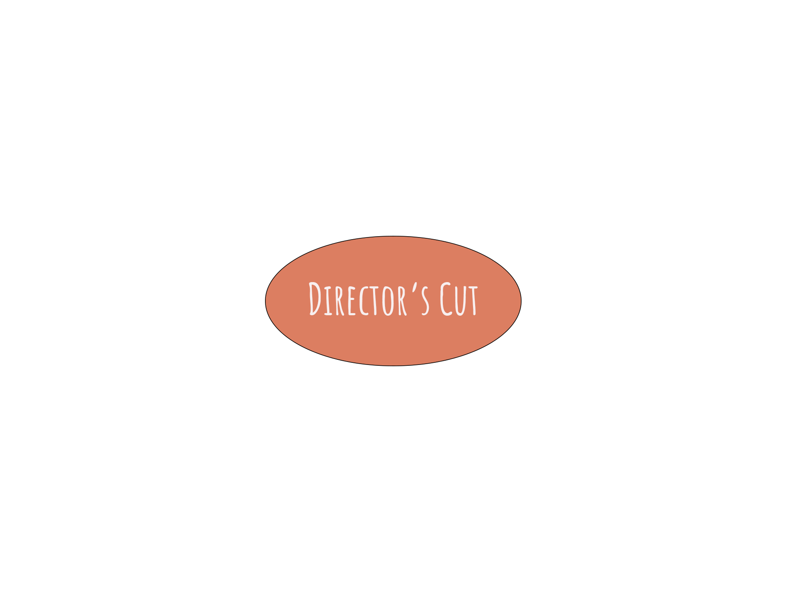
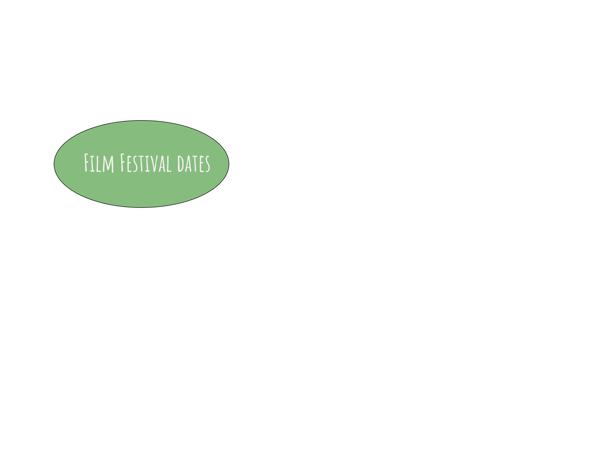
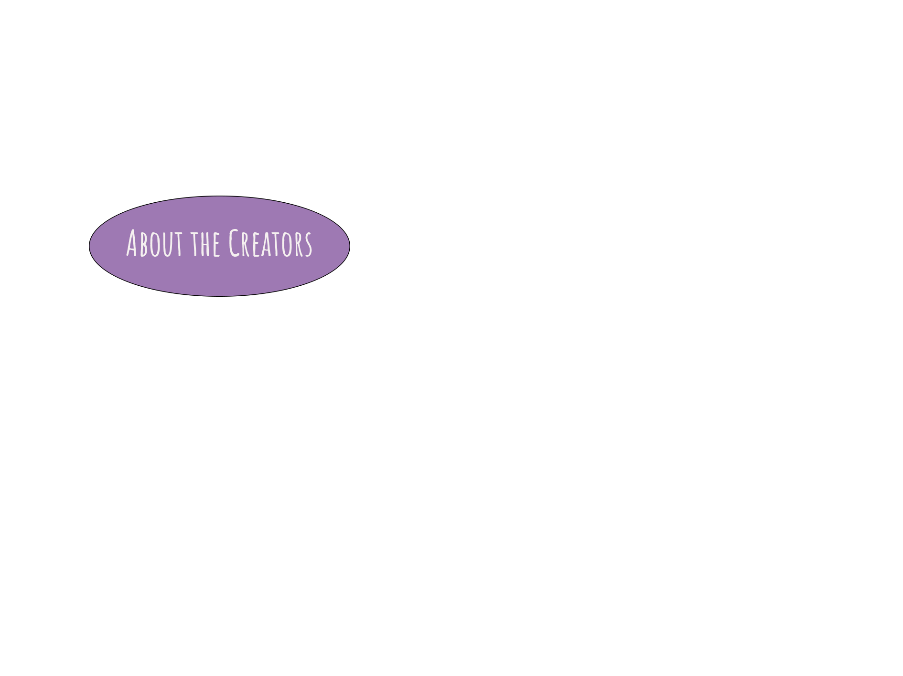

Home
About The Creators
Riva,Christine and Li
Artist Statement
The intent of this film was to create communicative but delectable media under 30 minutes. It was rather fun to shoot and we got a free crispy tempura roll in the bargain. I cannot believe we edited it on imovie, my father would kill me if he found out. The editing gods were not smiling upon us that day because adobe premiere pro’s audio option kept quitting. In any case the pressure bonded our team together as we stuffed crispy shrimp into our moths while quickly clicking away at imovie, hoping the dissolve at the end would work and everyhting would export okay. It did but my FACE BECAME THE LAST FRAME. OH WELL, I HAD A POKE BOWL THE OTHER DAY.


